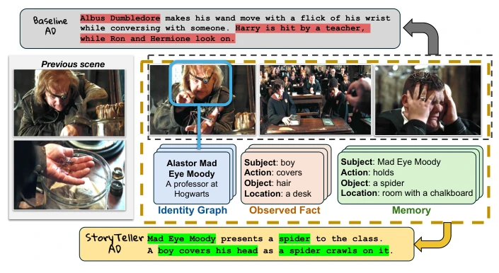
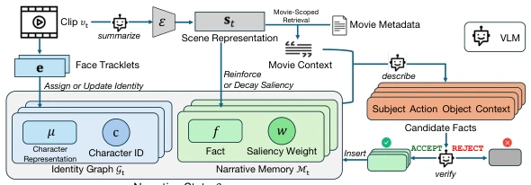
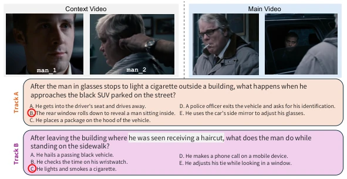
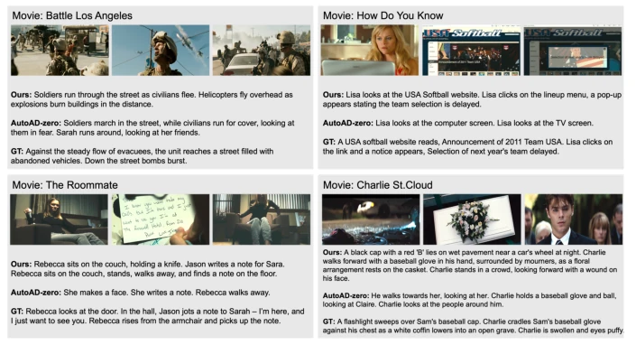

This StoryTeller attempts to address the coherence issue of long-form video audio description (AD) using the 'training-free' claim, which sounds promising. It claims to function solely with video and titles, without requiring subtitles or character libraries, which is a boon for accessibility. However, 'training-free' often implies high inference costs; relying on VLMs to verify facts certainly slows down speed. Moreover, although the StoryAD-QA benchmark is novel, having LLMs perform QA to test AD quality inevitably raises suspicions of 'using models to test models'. Nevertheless, introducing 'salience memory' and 'identity graphs' does address the pain points of long-form video understanding, proving much smarter than simply splicing clips. It remains uncertain whether memory will overload in extremely long films, or if VLM verification will become a bottleneck. Overall, it is a sincere attempt, but still far from 'perfect', particularly the robustness in handling complex scenes still requires verification.
Long-form video audio description (AD) must not only describe actions but also maintain characters and story context; otherwise, visually impaired users cannot understand the plot. Existing video-language models (VLMs) typically process clips independently, leading to context fragmentation [38]. Although training-free methods such as AutoAD-Zero have emerged, they often rely on shallow context or static character libraries and cannot explicitly model the evolution of narrative over time [38]. More seriously, many existing systems rely on copyright-restricted training data, subtitles, or pre-computed facial features, limiting their generalization capability on new films [8, 10]. Human audiences track stories through dynamic memory, whereas existing systems lack this 'narrative memory', resulting in generated descriptions that lack causal coherence. Therefore, a training-free method capable of maintaining a persistent narrative state is needed to ensure consistency of characters and events across long sequences, while avoiding dependence on expensive annotated data.

Fig. 1: Story-level audio description requires narrative memory. Existing au- dio description (AD) systems typically generate descriptions using only local visual context or static character banks, which often fails to preserve long-range narrative relationships. Our StoryTeller instead maintains a persistent narrative state consist- ing of an identity graph that tracks characters across scenes and a salience-weighted memory that accumulates narrative facts over time. This enables consistent character references and long-range story reasoning across an entire film. The baseline example is the output of AutoAD-Zero.
StoryTeller employs a three-stage pipeline to process video clips. First, it updates character continuity via an Identity Graph, utilizing ArcFace to extract face embeddings, assigning new frames to existing characters or creating new nodes without requiring a pre-defined character library. Second, it performs grounded fact induction, combining scene summaries, optional public metadata (e.g., IMDb), and old memories to extract structured fact candidates. The key innovation lies in the verification stage: VLMs are used to visually verify candidate facts, allowing only facts supported by the video to enter the memory, preventing metadata from misleading. Finally, information is managed through Salience-Based Narrative Memory, where relevant fact weights are enhanced and irrelevant facts decay over time, simulating the human attention mechanism. The entire process requires only raw video and titles as input, without fine-tuning, achieving a closed loop from visual perception to narrative generation.

Fig. 2: Overview of StoryTeller. Before processing clip vt, the system maintains the narrative state St−1 = (Gt−1, Mt−1), where Gt−1 is the identity graph and Mt−1 is the narrative memory. Given vt, StoryTeller (1) updates the identity graph to main- tain character continuity, (2) extracts structured factual candidates using the updated identity graph, optional public movie metadata, and the previous narrative memory, and (3) updates the narrative memory using semantic filtering, VLM verification, and reinforcement–decay salience dynamics. Public movie metadata may suggest character names or plot context, but only visually verified facts are stored in narrative memory.
Evaluation was conducted on MAD-Eval and a custom-built StoryAD-QA benchmark. Baselines include AutoAD-Zero [38], AutoAD-III [10], among others. Metrics cover CIDEr, SPICE, and QA accuracy on StoryAD-QA. Results show that StoryTeller outperforms baselines in both narrative coherence and QA tasks, with significant improvements especially in long clips (240s) and context-dependent (Track B) tasks. Ablation experiments indicate that removing the memory module or identity tracking leads to significant performance degradation, proving that persistent state is crucial for long-form video understanding. Even without using IMDb metadata, performance remains superior to some baselines, demonstrating the effectiveness of the visual verification mechanism. However, inference time is relatively long, requiring 3-4 hours to process a movie, which limits real-time application, and dependence on VLMs may introduce new hallucination risks.

Fig. 3: Example of questions from two tracks in StoryAD-QA. Grey panels show frames from the preceding context window used in Track B for question gener- ation. The context reveals that the man was receiving a haircut inside the building, enabling the question to reference this earlier event. Blue panels show the main clip, where the man stands outside the building and lights a cigarette, which determines the correct answer. During evaluation, only the AD of the main clip is provided, so the description must preserve or reintroduce the earlier context.

Fig. 4: Qualitative comparison of StoryTeller, AutoAD-Zero [38], and professional reference AD. (GT).